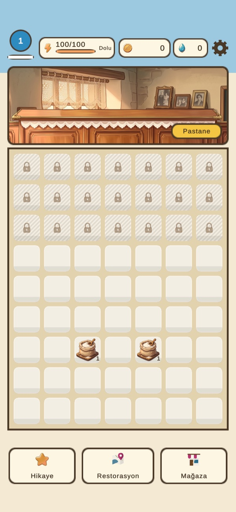
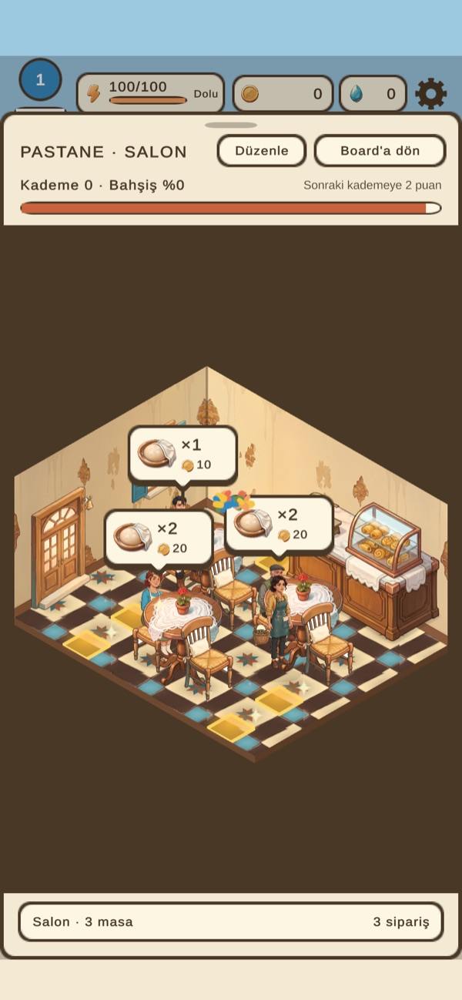
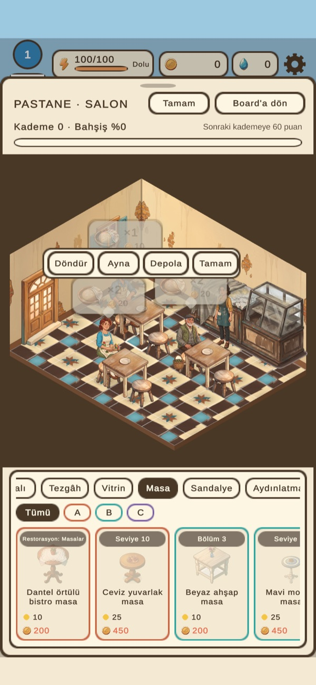
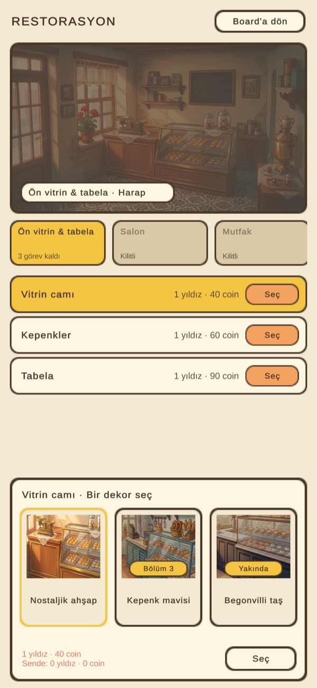

Portfolio
I'm Talha, a co-founder and technical lead based in Istanbul. I'm making a merge-2 mobile game in Unity, I shipped a fleet app to the App Store and Google Play, and I led a team building city-scale digital twins in Unreal Engine 5 and Unity.
Mobile game · in development
You inherit your grandmother's run-down bakery on Cunda island in Ayvalık. You merge ingredients on the board, serve orders to the neighbourhood, restore the shop room by room and furnish it your own way, while the story of the family unfolds chapter by chapter.
I am the studio's only human: product owner and decision maker. The rest of the team is a set of AI agents that I direct for code, design, narrative and tooling. Every decision, the roadmap and the quality bar are mine.
The opening of chapter one, with sound: the story introduces the bakery, then the core loop takes over. Ingredients come out of the oven, get merged up and served to customers, and each finished task moves the story forward. The coins and stars earned go into restoring the shop front, and the clip ends in decoration mode.
Recorded from the game running in the Unity editor at phone resolution, driven by a script that plays through the real interface. Development build; interface in Turkish.




Screens are from development builds. The interface is in Turkish for now; English localization is on the roadmap.
No design, art or story decision is taken on a hunch. Each one starts with three to five mocked options on a single review page, I pick one, and the choice is written down with its reasoning.
Three interactive mocks with working merges, energy and order delivery.
Chose the classic layout: it gives the 7×9 board the most room and is what players of the genre already know.
The simulation showed mid-level players piling up about 2,400 coins a day with only restoration to spend them on.
That finding became the decoration system: furniture costs coins, and a better-styled room earns up to 25% more in tips.
In the first iPad playtest energy lasted the whole session. The cause was the level-up bonus, not the refill rate.
Alternative rules were run through the simulator with the same seed; the decision is under review.
Before any real player data exists, I balance the economy with a Python simulator: 1,000 players in three personas, played for seven days. The design target is that a mid-level player hits the energy wall three to four times a day, enough to create a reason to return without blocking play.
Energy walls per player per day. The dashed box is the target range for the mid persona (3.0–4.0); the measured value is 3.28.
| Per player, per day | Casual | Mid | Whale |
|---|---|---|---|
| Share of players | 59.5% | 29.8% | 10.7% |
| Sessions | 2.5 | 4.0 | 6.0 |
| Minutes played | 17.3 | 32.0 | 53.4 |
| Merges | 148 | 401 | 719 |
| Orders completed | 18.5 | 48.8 | 84.7 |
| Rewarded videos watched | 0.25 | 3.54 | 2.78 |
Simulated results, not live data. They are used to compare design options before launch.
The plan is 24 weeks from prototype to a soft launch in Turkey and Canada, then a global iOS release. Soft-launch targets are day-1 retention above 35% and day-7 above 12%. The quality bar is 60 fps on iPhone 12 and newer, a cold start under four seconds and a crash-free rate above 99.5%. An analytics event taxonomy is defined up front, so every new feature ships with its events.
Published mobile app
BeeFleet plans delivery routes for logistics fleets and guides drivers through them. I co-founded the company behind it and lead its engineering and product decisions.
The driver app is live on the Apple App Store and Google Play, with live location tracking, maps and push notifications.
It passed live field tests run by Turkish Cargo.
A routing engine built on Valhalla with custom Turkish speed profiles.
It closed a ~95% ETA accuracy gap against Google Maps for last-mile and mid-mile logistics.
Real-time 3D
I led a cross-disciplinary team building production digital twins for Turkish municipalities: drone photogrammetry turned into 3D city meshes and terrain, then rendered as interactive environments in game engines.